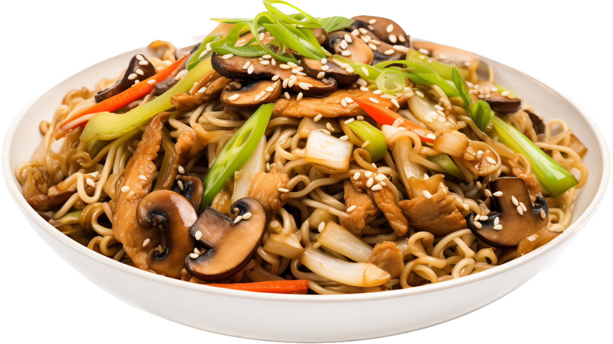

Semana da Cultura Japonesa
Venha degustar a Semana da Cultura Japonesa conosco, sempre apreciando a cultura oriental!
Data: 20/09/2026
Local: Centro Cultural Oriental
Programação
14h - Degustação de Yakisoba
17h - Apresentação Cultural
Diversos produtos
- Temaki
- Sushi
- Yakisoba
- Guioza

Vídeo do Festival
Local do Evento
📍 Centro Cultural Oriental
Rua Thomaz Gonzaga, 150 - Liberdade
São Paulo - SP
Data: 20 e 21 de Setembro de 2026
Horário: das 10h às 20h
Entrada gratuita! Toda a programação é aberta ao público.